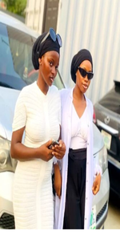
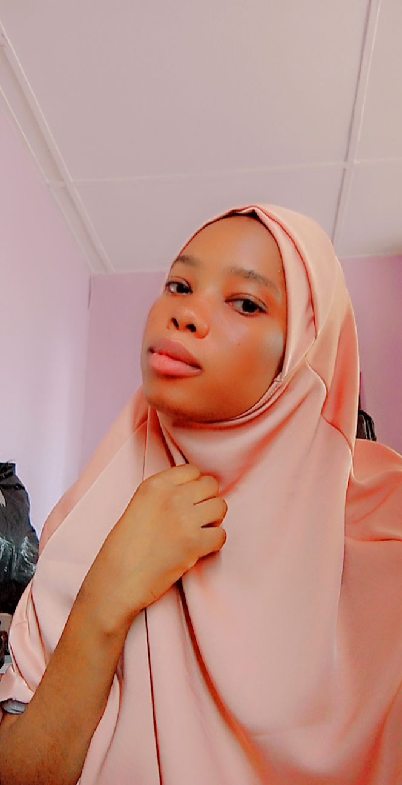

I'm zaynab fontend developer
As a frontend developer with more than six months Experience,i have a solid foundation in HTML,CSS and JavaScript,enabling me to create interactive and visually appealing web pages. in addition i'm a UI/UX from start before i move to coding, i possess a basic understanding of UI/UX design principles, collaborative mindset,i thrive in multidiciplinary teams,delivering high-qualityy project on time and within scope
Education
Top Brains Comprehensive College Ibadan,Oyo State
Pasture and Range Management
Federal University of Agriculture Abeokuta, Ogun State
Skills
Communication Skills,Time Management,Adaptability and Flexibility,Critical thinking and Attentation to details
Experience
HNG Intenship Stage 5

